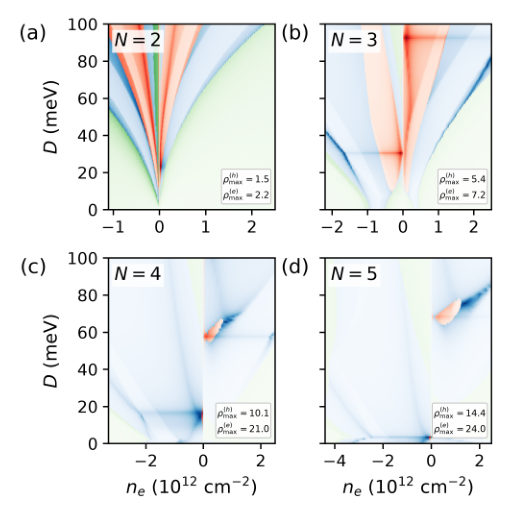


Authors: Konstantinos Sourounis, Peter M. Oppeneer
Type: theory · Category: other · PDF: https://arxiv.org/pdf/2610.18286v1
Analysis basis: full PDF text, analyzed in chunks
Topic relevance: Keldysh / 2PI / non-Gaussian methods 2/5

Summary. This theoretical study explores superconductivity in multilayer graphene by solving the Migdal-Eliashberg equations, focusing on phonon-mediated pairing. The authors show that phonon coupling, derived from DFT calculations, can successfully explain multiple distinct superconducting phases observed experimentally. The work highlights the interplay between electronic structure, layer number, and lattice vibrations in determining superconducting properties.
Why it may be interesting. While focused on graphene, the methodology of using advanced many-body theory (Migdal-Eliashberg) combined with first-principles calculations to map out complex phase diagrams is highly relevant to understanding pairing mechanisms in novel quantum materials.
Main problem. The paper investigates the microscopic origin of superconductivity in rhombohedral multilayer graphene, specifically determining the relative importance of phonon-mediated pairing versus purely electronic mechanisms near phase boundaries.
Main result. The authors successfully reproduce experimentally observed superconducting regions and predict new phases by modeling the pairing mechanism using phonon-mediated coupling within the Migdal-Eliashberg framework.
Method. The study solves the coupled, self-consistent Migdal-Eliashberg equations, utilizing first-principles calculations (DFT+DFPT) to derive phonon dispersions and electron-phonon coupling matrix elements.
Model / system. The system is rhombohedral multilayer graphene (N layers), modeled using a tight-binding Hamiltonian incorporating electron-electron interactions via the Stoner approximation. The superconductivity is governed by solving the Migdal-Eliashberg equations.
Key observables. Superconducting gap ($\Delta$), critical temperature ($T_c$), and the electronic Density of States (DoS) across different flavor degeneracies ($\gamma$).
Important parameters / regimes. Carrier density, displacement field, and the number of graphene layers (N=2 to 6).
Assumptions / limitations. The Stoner approximation is used for symmetry breaking, and the full self-consistent treatment including electron-phonon retardation is noted as a limitation.
Figures summary. Figures illustrate the evolution of the DoS with doping/displacement field, the phonon dispersion and electron-phonon coupling strength ($V_{eph}$) vs. layer number, and the calculated superconducting gap ($\Delta$) in various doping regimes for trilayer and tetralayer graphene.
Paper structure. The paper progresses by first establishing the electronic structure and flavor degeneracy using the Stoner model, then calculating the necessary electron-phonon coupling parameters via DFT+DFPT, and finally solving the Migdal-Eliashberg equations to map out the superconducting phase diagram.
The recent observation of superconductivity in untwisted multilayer graphene has sparked intense interest in its microscopic origin. As the displacement field and carrier density are varied, superconductivity emerges in several distinct regions with different temperature and magnetic-field responses. This behavior has been attributed to the presence of distinct electronic phases, raising the possibility that different superconducting regions originate from different microscopic mechanisms. While purely electronic pairing mechanisms have been extensively explored, an in-depth examination of phonon-mediated superconductivity is still missing. Here, we solve the coupled selfconsistent Migdal-Eliashberg equations using input from first-principles calculations and incorporating interaction-driven symmetry breaking of the electronic ground state. Varying the carrier density and displacement field, we reproduce the experimentally observed superconducting regions with comparable superconducting properties such as gap and $T_c$ and predict additional, as-yet undiscovered superconducting phases. Our findings exemplify that several superconductivity regions in rhombohedral graphene can be satisfactorily explained by phonon-mediated pairing.
Authors: Andrii Iurov, V. P. Gusynin
Type: theory · Category: other · PDF: https://arxiv.org/pdf/2610.17492v1
Analysis basis: full PDF text, analyzed in chunks
Topic relevance: Keldysh / 2PI / non-Gaussian methods 1/5 · analog quantum simulation 1/5 · quantum measurements 1/5


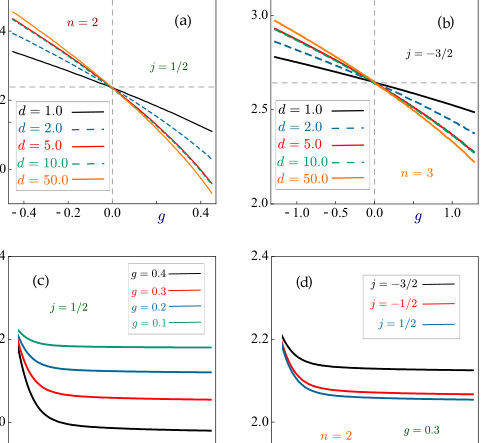
Summary. This paper provides a comprehensive theoretical analysis of how charged impurities perturb the Landau levels in gapped graphene under a magnetic field. By employing the WKB method, the authors specifically account for the screening of the Coulomb potential due to nearby metallic gates. The results highlight that the energy spectrum is strongly sensitive to the physical separation between the graphene and these gates.
Why it may be interesting. The detailed analysis of how external environmental factors (like nearby gates) modify fundamental quantum states (Landau levels) in 2D Dirac materials is highly relevant to understanding engineered quantum devices.
Main problem. The study theoretically investigates the electronic energy levels of a charged impurity embedded in gapped graphene when subjected to a perpendicular magnetic field.
Main result. The energy spectrum shows a significant dependence on the screening distance of nearby metallic gates, which is a key feature distinguishing this work.
Method. The Wentzel-Kramers-Brillouin (WKB) approximation is employed to solve the low-energy Dirac equation, supplemented by analytical and numerical techniques.
Model / system. The system is gapped graphene, modeled by a Dirac Hamiltonian incorporating a screened Coulomb potential $V(r)$ from an impurity. The gap ($\Delta$) can be induced by substrates, and the potential is modified by screening from metallic gates.
Key observables. The energy spectrum, specifically the modified Landau levels, as a function of magnetic field strength and impurity charge.
Important parameters / regimes. Magnetic field strength ($B$), impurity charge ($Z$), gap parameter ($\Delta$), and the screening distance ($d$) to metallic gates.
Assumptions / limitations. The primary assumption is the applicability of the WKB method to the Dirac equation, which requires careful handling of the geometric phase. The potential is modeled as a screened Coulomb potential.
Figures summary. Figures illustrate the dependence of the distorted energy levels on the impurity charge ($g$) and the explicit dependence of these levels on the screening distance ($d$).
Paper structure. The paper progresses by first setting up the Hamiltonian and using WKB for the general case, then detailing the screened Coulomb potential model, and finally presenting numerical results showing the dependence of Landau levels on $Z$ and $B$.
In this paper, we present a comprehensive theoretical study of the electronic states in gapped graphene in the presence of a charge impurity and a magnetic field. We focus on the impurity-induced modification of the Landau levels under the influence of an attractive or repulsive Coulomb potential. Since analytical solutions of the Dirac equation are not available in this case, the study is carried out using the Wentzel-Kramers-Brillouin (WKB) approach. Special attention is paid to the screening of the Coulomb potential in the presence of metallic gates situated at some distances from graphene sheet, as is commonly the case in experiments. Using both analytical and numerical methods, we determine the energy spectrum as a function of the magnetic field strength and impurity charge for screened and unscreened Coulomb potentials. Our results reveal a significant dependence of the energy levels for sample-to-gate distances of less than 50 nm.
Authors: Abanoub Mikhail, Nikolay Solodovchenko, Sen Xu, Fan Zhang, Maksim Tumashov, Mingzhao Song, Sergei Makarov, Andrey Bogdanov
Type: theory · Category: other · PDF: https://arxiv.org/pdf/2610.17862v1
Analysis basis: full PDF text, analyzed in chunks
Topic relevance: analog quantum simulation 1/5 · interference shaping light 1/5


Summary. This review provides a comprehensive, mechanism-based framework for achieving optical isolation on photonic chips. It systematically compares three physical methods—magneto-optics, time modulation, and nonlinearity—to break Lorentz reciprocity. The paper is crucial for guiding the development of next-generation, high-performance integrated quantum optical circuits.
Why it may be interesting. This work is highly relevant as it bridges fundamental symmetry-breaking physics (Lorentz reciprocity) directly to the engineering requirements of advanced quantum optical components like integrated lasers and quantum light sources.
Main problem. The primary challenge is developing a scalable, on-chip optical isolator that combines strong nonreciprocal isolation with low insertion loss and broad bandwidth.
Main result. The review establishes a common framework by classifying three primary physical routes—magneto-optical bias, external space-time modulation, and nonlinear processes—for breaking Lorentz reciprocity in integrated photonics.
Method. The analysis uses the scattering matrix formalism and develops a mechanism-based perspective to distinguish true isolation from mere intensity asymmetry.
Model / system. The focus is on Photonic Integrated Circuits (PICs) containing lasers and optical components, modeled using electromagnetic theory and analyzed via the scattering matrix ($\mathbf{S}$).
Key observables. Isolation strength ($T_{21} \approx 1, T_{12} \ll 1$), insertion loss, bandwidth, and the degree of nonreciprocity ($\mathbf{S} eq \mathbf{S}^T$).
Important parameters / regimes. Lorentz reciprocity breaking mechanisms (magnetization, time-varying fields, nonlinearity), and practical trade-offs like footprint and drive requirements.
Assumptions / limitations. The review assumes the applicability of linear/time-invariant electromagnetic theory while discussing extensions using non-Hermitian and topological concepts.
Figures summary. Figure 1 provides a mechanism-based map comparing MO, Space-time modulation, and Nonlinear routes; Figure 2 schematically differentiates between optical isolators, diodes, and asymmetric transmission.
Paper structure. The paper first clarifies the physical requirements for isolation, then systematically distinguishes between different types of nonreciprocity, and finally compares the three main physical mechanisms (MO, Space-time, Nonlinear) before discussing advanced frameworks.
Optical isolation suppresses back-reflections that destabilize lasers, produce parasitic interference, and increase crosstalk in photonic systems. Although free-space and fibre-optic isolators are mature, no broadly adopted on-chip technology yet combines strong isolation, low insertion loss, broad bandwidth, compact footprint, and scalable fabrication. The difficulty is twofold: Lorentz reciprocity must be broken, and every relevant backward spatial, spectral, and polarization channel must be suppressed. This Review develops a common framework for assessing proposed solutions. We first distinguish pairwise nonreciprocity from intensity-asymmetric transmission and from true isolation using the constitutive relations and scattering matrix. We then compare three physical routes to an integrated nonreciprocal response: magneto-optical bias, externally driven space-time modulation, and nonlinear optical processes. Topological and non-Hermitian systems are treated as cross-cutting design frameworks that can route, protect, or enhance an underlying nonreciprocal response, but do not by themselves break reciprocity. Finally, we examine fundamental constraints and practical trade-offs among isolation, insertion loss, bandwidth, footprint, modal coverage, drive requirements, and fabrication compatibility. The resulting mechanism-based perspective connects reciprocity-breaking physics to the requirements of scalable photonic integrated circuits.
Authors: Lindsey N. Ioos, Duncan A. Peterson, Scott C. Warren
Type: theory · Category: statistical mechanics · PDF: https://arxiv.org/pdf/2610.18490v1
Analysis basis: full PDF text, analyzed in chunks
Topic relevance: Keldysh / 2PI / non-Gaussian methods 1/5 · methods for driven-dissipative 1/5


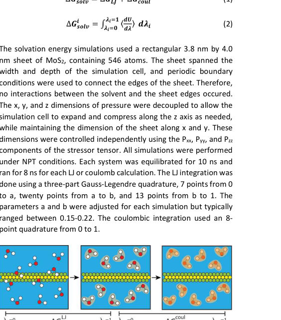


Summary. This paper develops an advanced simulation technique using alchemical decoupling to accurately model the solvation energy and stability of 2D materials like $ ext{MoS}_2$. By connecting separate potential energy surfaces, the authors predict that these materials resist full desolvation, maintaining a stable solvent layer between layers. This offers crucial insights into how solvents dictate the structural behavior and dispersion of 2D materials.
Why it may be interesting. The work provides a rigorous, quantitative framework for calculating interfacial free energies in complex soft matter systems, which has implications for understanding interfaces in quantum materials and colloidal suspensions.
Main problem. The study aims to understand the solvation energy and stability of 2D materials, which is critical for predicting their aggregation and exfoliation mechanisms in solution.
Main result. The authors predict a significantly higher energy barrier for full desolvation compared to prior simulations, suggesting that 2D materials tend to retain a stable monolayer of solvent between layers.
Method. They employ an improved simulation strategy using the Gibbs free energy of solvation ($\Delta G_{ ext{solv}}$) to connect two disconnected potential energy surfaces (PES) representing the fully desolvated and fully solvated states.
Model / system. The system involves 2D materials, specifically $ ext{MoS}_2$, interacting with various solvents ($ ext{DMF}$, $ ext{DMSO}$, $ ext{IPA}$, $ ext{H}_2 ext{O}$). The modeling relies on calculating the solvation energy using alchemical decoupling.
Key observables. Gibbs free energy of solvation ($\Delta G_{ ext{solv}}$), Potential of Mean Force (PMF) curves, and areal density plots characterizing solvent structure.
Important parameters / regimes. Solvent types ($ ext{DMF}$, $ ext{DMSO}$, $ ext{IPA}$, $ ext{H}_2 ext{O}$), separation distances (e.g., $9.5 ext{ Å}$ to $13.2 ext{ Å}$), and the coupling parameter ($\lambda$) for alchemical decoupling.
Assumptions / limitations. The method assumes that connecting the vacuum PES and solvent PES via $\Delta G_{ ext{solv}}$ correctly models the transition state, overcoming limitations of prior simulations that struggled with sheet bending.
Figures summary. Figures illustrate the three-step method for calculating PMF curves, the setup for PMF simulations, and comparisons of calculated $\Delta G_{ ext{solv}}$ and molecule counts between sheets for different solvents.
Paper structure. The paper introduces the physical problem, details the advanced simulation methodology (alchemical decoupling to connect PES), presents quantitative results on solvation energies and structural stability across various solvents, and concludes by comparing findings with existing literature.
Understanding why 2D materials remain suspended in solutions is essential to understanding the mechanisms of aggregation and exfoliation. These dynamics have been difficult to model because of the long timescales and large activation energies involved in these simulations. Here we describe an improved strategy for modelling the solvation and stability of 2D materials that uses the Gibbs free energy of solvation to accurately calibrate two disconnected potential energy surfaces for the fully desolvated and fully solvated 2D materials. By joining these surfaces using solvation energy, we obtain predictions for 2D material stability in various solvents that are qualitatively different than prior simulations and that have excellent agreement with experimental results. Our approach predicts a much higher barrier to full desolvation of the material, suggesting that materials that appear to be aggregated in fact still retain monolayers of solvent between adjacent layers of 2D materials. This work provides much needed understanding on the interactions between the solvent and 2D material that can guide future experimental work.
Authors: Antonio Carone, Aso Rahimzadegan, Birgül Kalkan, Thomas G. Parton, Tony Jin, Zihao Lu, Clemens Schmitt, Emeline Raguin, Bruno Frka-Petesic, Kevin Vynck, Silvia Vignolini
Type: both · Category: other · PDF: https://arxiv.org/pdf/2610.18116v1
Analysis basis: full PDF text, analyzed in chunks
Topic relevance: interference shaping light 1/5

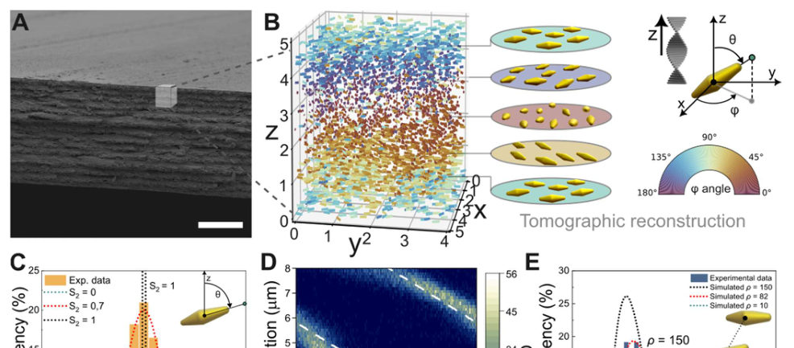
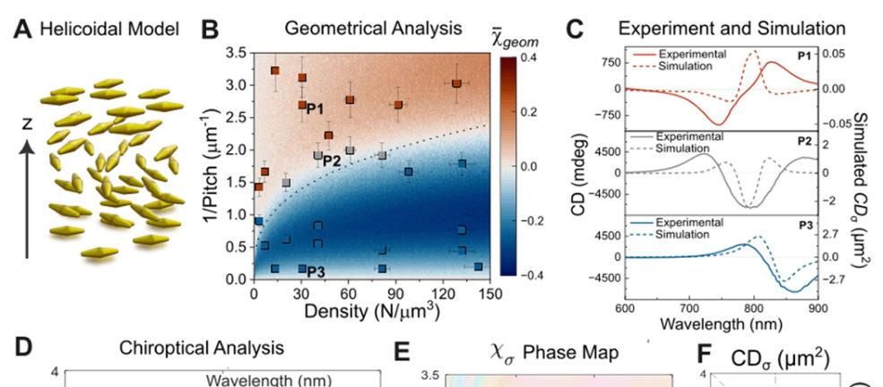
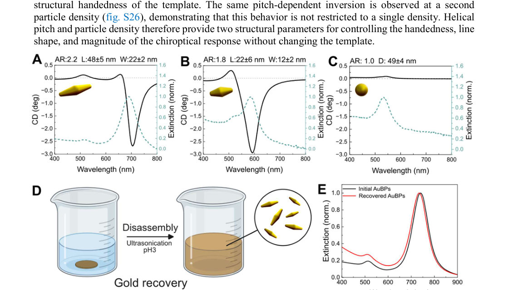
Summary. This work presents a scalable method to create highly ordered, chiral metamaterials by assembling gold nanoparticles within a chitin template. The researchers successfully demonstrate strong optical activity and, crucially, show that the optical handedness can be inverted by tuning the structure's pitch, independent of the template's inherent chirality. This advances the field toward practical, sustainable chiral photonics.
Why it may be interesting. The ability to precisely control optical chirality through structural periodicity, while maintaining scalability and material circularity, is highly relevant for designing advanced photonic devices and metamaterials.
Main problem. The primary challenge addressed is developing a scalable method to produce chiral materials exhibiting strong and reproducible optical activity.
Main result. The authors demonstrate a scalable assembly strategy yielding ordered chiral metamaterials with strong optical activity, achieving a dissymmetry factor of 0.55 and enabling the decoupling of geometrical and optical chirality.
Method. The study combines experimental characterization (e.g., CD spectroscopy, FIB-SEM tomography) with advanced electromagnetic simulations (T-matrix formalism) to model the chiroptical response.
Model / system. The physical system consists of metallic nanoparticles (gold bipyramids) self-assembled into hierarchical helicoidal metamaterials using a biosourced chitin nanocrystal template.
Key observables. Dissymmetry factor ($g$-factor), complex chiroptical index ($\chi_{ ext{c}}$ or $\chi_{\Omega}$), helicoidal pitch ($P$), and structural correlation diagrams ($\phi$ vs. $z$).
Important parameters / regimes. Helicoidal pitch (tunable from hundreds of nm to several $\mu$m), particle density ($ ho$), and the dihedral angle ($\Delta\varphi$) governing chirality inversion.
Assumptions / limitations. The analysis assumes the plasmonic response originates from the AuBPs and that the chitin template itself is optically inactive, which simplifies the analysis.
Figures summary. Figures illustrate schematic fabrication, cross-sections, CD spectra vs. pitch, tomographic reconstructions showing particle orientation ($\phi$ vs. $z$), and complex parameter maps showing chirality inversion.
Paper structure. The paper progresses from establishing the need for scalable chiral materials, detailing the co-assembly process, quantifying the optical response using CD and simulations, and finally demonstrating the control over optical handedness by tuning the structural pitch.
Chiral materials manipulate light in ways that hold promise for sensing, imaging, and photonics, but producing such materials with strong and reproducible optical activity at large scale remains challenging. Here, we develop a scalable strategy to assemble hierarchical helicoidal metamaterials from metallic nanoparticles and chitin nanocrystals, a biosourced polysaccharide. Spontaneous co-assembly produces ordered chiral structures with strong plasmonic optical activity, reaching a dissymmetry factor of 0.55. The unprecedented ability to vary the helicoidal pitch allows control of the optical response, enabling inversion of optical handedness without changing the handedness of the template, effectively decoupling geometrical chirality from optical chirality. Remarkably, the gold nanoparticles can also be recovered from dry films and redispersed as colloids, introducing an appealing circularity concept for sustainable chiral plasmonic materials.
Authors: Zhongyu Wan
Type: theory · Category: other · PDF: https://arxiv.org/pdf/2610.18185v1
Analysis basis: full PDF text, analyzed in chunks
Topic relevance: analog quantum simulation 1/5


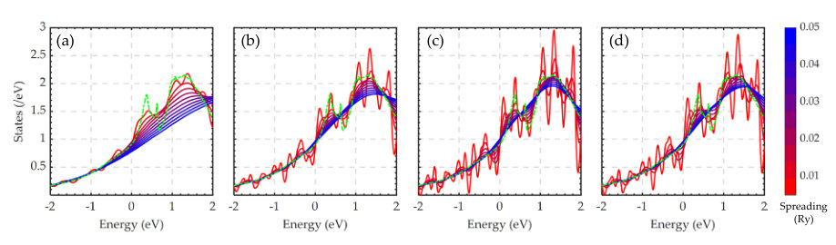
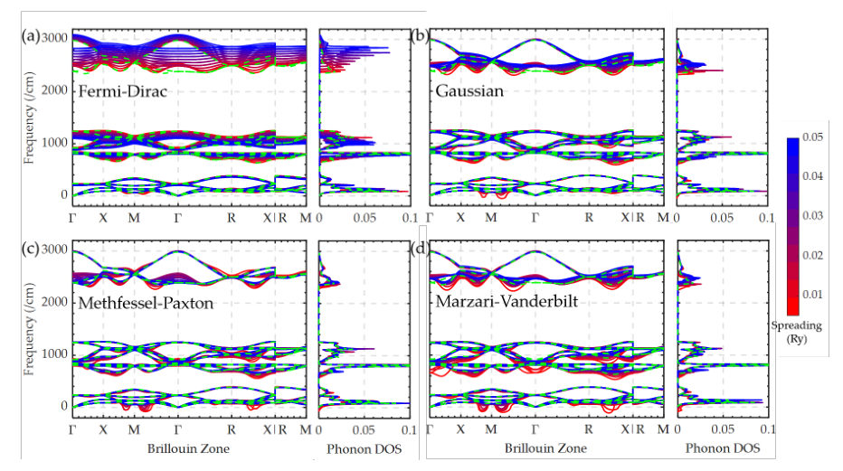
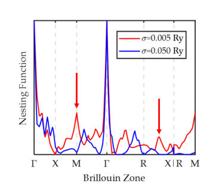
Summary. This work investigates how arbitrary smearing parameters in electronic structure calculations introduce quantitative errors into the prediction of superconductivity. Using CsH6 as a model, the authors demonstrate that different smearing methods can lead to spurious instabilities or incorrect coupling strengths. They conclude by deriving a universal scaling relation to provide a theoretically objective method for selecting smearing parameters in high-throughput computational screening.
Why it may be interesting. While focused on solid-state theory, the rigorous treatment of numerical artifacts and the derivation of an objective protocol for parameter selection is highly relevant to any computational field relying on approximations, including quantum information simulations.
Main problem. The paper addresses the quantitative impact of empirical smearing parameters used in first-principles calculations on the calculated properties of phonon-mediated superconductivity.
Main result. The choice of smearing function and width significantly affects phonon stability and electron-phonon coupling, but the authors propose a free-electron-gas derived scaling relation to provide an objective protocol for parameter selection.
Method. The study uses Density Functional Theory (DFT) calculations, comparing results from various smearing methods (e.g., Methfessel-Paxton, Fermi-Dirac) against the parameter-free optimized tetrahedron method.
Model / system. The benchmark system is hexahydride CsH6, analyzed to study its superconducting properties and lattice dynamics under different numerical approximations.
Key observables. Superconducting transition temperature ($T_c$), electron-phonon coupling strength ($\lambda$), phonon frequencies (stability/softening), and the Fermi level ($\epsilon_F$) shift.
Important parameters / regimes. Smearing width ($\sigma$), smearing function type (Gaussian, FD, MP), and the free-electron-gas derived scaling relation.
Assumptions / limitations. The analysis assumes that the discrete electronic mesh requires smearing, but critically argues that the choice of smearing parameters should not obscure the true physical result.
Figures summary. Figures schematically illustrate Fermi surface undersampling/over-smoothing effects, and others show the dependence of EPC parameters ($\lambda, T_c$) on the smearing width for different schemes.
Paper structure. The paper systematically compares various smearing techniques, analyzes how these techniques affect electronic structure (DOS, $\epsilon_F$), then traces these errors through lattice dynamics (phonon frequencies), culminating in a proposal for an objective scaling relation for parameter selection.
In first-principles calculations of metallic systems, the discrete electronic mesh in the Brillouin zone necessitates a smearing function and its width (e.g., the widely used 0.02 Ry Methfessel-Paxton scheme) to enforce continuity of energy and occupation at the Fermi surface. However, the quantitative impact of such empirical parameters on phonon-mediated superconductivity has long been overlooked, leading to their habitual selection by mere convention. Here, using hexahydride CsH6 as a benchmark, we systematically investigate the magnitude and propagation mechanism of smearing-induced errors against the parameter-free optimized tetrahedron method. Long-tailed smearing delocalizes the occupation window, causing substantial Fermi-level shifts, flattening of the density of states, and hardening phonon modes, thereby weakening electron-phonon coupling. Conversely, short-tailed smearing suffers from insufficient sampling, producing density-of-states oscillations and enhanced Fermi-surface nesting; via amplified electronic screening and Peierls instabilities, this softens acoustic modes and generates imaginary frequencies, causing CsH6 to be dynamically unstable and discarded. However, the optimized tetrahedron method reveals that CsH6 is dynamically stable under ambient pressure with a remarkable superconducting transition temperature of 121 K. To prevent subjective empirical parameters from obscuring theoretically promising high-temperature superconductors, we derive a simple scaling relation for the smearing width, applicable to different smearing functions, from the free-electron-gas model, offering an objective, precise, and efficient protocol for parameter selection in high-throughput screening.
Authors: A. Alonso-Izquierdo, A. González-Parra, K. Slawinska, A. Wereszczynski, T. Winyard
Type: theory · Category: other · PDF: https://arxiv.org/pdf/2610.17437v1
Analysis basis: full PDF text, analyzed in chunks
Topic relevance: analog quantum simulation 1/5
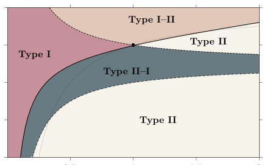
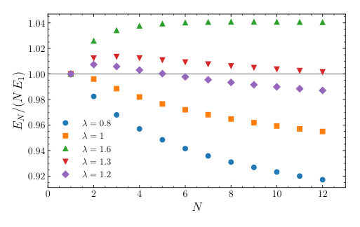


Summary. This work investigates how adding a dimension-six self-interaction term modifies the vortex structure in Abelian-Higgs models. It reveals the existence of novel mixed-type vortices (I-II and II-I) that exhibit alternating short- and long-range forces. This theoretical finding expands the understanding of vortex physics beyond the standard Type I/II classification, suggesting new stable configurations in superconductors and related field theories.
Why it may be interesting. The discovery of stable, mixed-type vortices (I-II and II-I) demonstrates how adding higher-order interaction terms can fundamentally alter the topological stability and interaction physics of condensed matter systems, which is relevant to understanding complex superconducting or magnetic phase transitions.
Main problem. To characterize the complex multi-vortex solutions that arise when a dimension-six self-interaction term is added to the standard Abelian-Higgs or Ginzburg-Landau model.
Main result. The model supports four distinct vortex regimes (Type I, II, I-II, II-I), with the latter two exhibiting mixed short-range attraction/long-range repulsion or vice versa. These mixed types allow for stable, structured vortex arrangements like Abrikosov lattice chunks.
Method. The analysis combines asymptotic solutions for long-range forces, spectral analysis of the vortex core to determine short-range forces, and numerical minimization of the energy functional.
Model / system. The system is described by a modified Abelian-Higgs model in 2+1 dimensions, featuring a potential $V$ that includes a sextic self-interaction term, extending the standard quartic Higgs potential.
Key observables. Long-range interaction energy $E_{ ext{int}}(d)$, short-range force (determined by spectral modes), and the binding energy ratio $E_N / (N E_1)$ for multi-vortex states.
Important parameters / regimes. The coupling constants $\lambda$ and $b$ govern the transition between the different vortex types, with the Bogomol'nyi-Prasad-Sommerfeld (BPS) limit marking a key boundary.
Assumptions / limitations. The analysis relies on asymptotic expansions for long-range behavior and heuristic arguments near the vortex core, though the results suggest the mixed types are robust features of the theory.
Figures summary. Figure 1 maps the phase structure in the $(\lambda, b)$ plane showing the four vortex regimes. Figures 2 and 3 provide examples of Type II-I solutions forming lattice chunks or clusters. Figure 4 illustrates the transition of binding energy minima for Type I-II solutions.
Paper structure. The paper systematically analyzes the force regimes (long-range vs. short-range) dictated by the parameters $\lambda$ and $b$, mapping out the phase diagram of vortex types, and then examines the stability and structure of multi-vortex configurations within these identified regimes.
We show that adding a dimension-six self-interaction to the Abelian-Higgs or Ginzburg Landau model results in a remarkable and rich structure of multi-vortex solutions. Besides the standard type I (attractive) and type II (repulsive) regimes, separated by the Bogomol'nyi-Prasad-Sommerfeld limit (BPS), we identify two new possibilities: type I-II vortices, which attract at short distances and repel at long distances; and type II-I vortices, with the opposite behaviour. Specifically, within the type II-I regime, multi-vortex solutions form chunks of the Abrikosov lattice or clusters. Conversely, in the I-II regime, axially symmetric multi-vortices are stable; nevertheless, depending on the model parameters and topological charge (winding number), they can be either the ground state or not.
Authors: Zhongyu Wan, Guo-Hua Zhong, Cheng-wei Ju, Ruiqin Zhang, Hai-Qing Lin
Type: theory · Category: strongly correlated electrons · PDF: https://arxiv.org/pdf/2610.18171v1
Analysis basis: full PDF text, analyzed in chunks


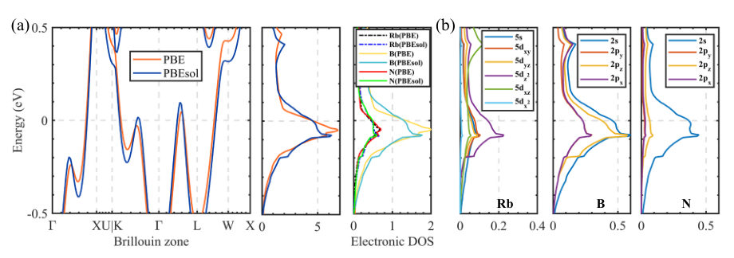


Summary. This work investigates the superconducting properties of covalent-cage superconductors using first-principles calculations. It demonstrates that the choice of DFT exchange-correlation functional critically impacts predictions, showing that PBE leads to unphysical instabilities. The PBEsol functional provides a much more accurate and stable picture, predicting high critical temperatures for these novel materials.
Why it may be interesting. While focused on solid-state superconductivity, the rigorous comparison of DFT functionals to determine physical stability and electronic ground states mirrors challenges in modeling strongly correlated quantum systems where approximations are critical.
Main problem. Accurately predicting superconducting properties in novel materials, especially covalent-cage superconductors, is highly sensitive to the choice of exchange-correlation (XC) functional in DFT calculations.
Main result. The PBEsol functional significantly outperforms PBE by stabilizing the electronic structure, eliminating imaginary phonon frequencies, and predicting a high critical temperature ($T_c$) of 113 K at ambient pressure for $ ext{Rb}( ext{BN})_5$.
Method. The study employs high-throughput first-principles calculations, comparing results derived from different XC functionals (PBE vs. PBEsol) to analyze electron-phonon coupling (EPC) and lattice stability.
Model / system. The research focuses on the $ ext{M}( ext{BN})_5$ family of covalent-cage superconductors, analyzing how their metallic covalent bonds respond to computational approximations.
Key observables. Superconducting critical temperature ($T_c$), electron-phonon coupling ($\lambda$), phonon frequencies (stability/imaginary modes), and lattice volumes.
Important parameters / regimes. Ambient pressure and applied pressures (e.g., 2 GPa); the choice of XC functional (PBE vs. PBEsol).
Assumptions / limitations. The primary source of computational uncertainty is attributed to XC effects, not the choice of pseudopotentials.
Figures summary. Figures compare lattice volumes, $\lambda$, $\omega_{ ext{log}}$, and $T_c$ deviations across different XC functionals, demonstrating the functional dependence of superconducting predictions.
Paper structure. The paper systematically compares the predictions of different XC functionals on key superconducting metrics, showing how PBE introduces instabilities while PBEsol yields stable, high-$T_c$ predictions.
The recent experimental synthesis of covalent cage superconductors has ignited hopes for ambient-pressure high-temperature superconductivity, while the computational strategy for discovering new materials poses challenges for accurately estimating superconducting properties. Here, we quantified the response of electron-phonon coupling (EPC) properties in M(BN)5 superconductors to different exchange-correlation (XC) effects using high-throughput first-principles calculations. We found that the metallic covalent bonds responsible for superconductivity exhibit anomalously high sensitivity to functional selection uncertainty, distinguishing them from conventional superconductors mediated by metallic bonding. The widely used PBE functional systematically overestimates lattice volumes, inducing phonon softening, enhanced EPC, and consequent Peierls instability. In contrast, PBEsol, which is more accurate through enhanced treatment of short-range interactions, eliminates imaginary frequencies in Rb(BN)5 that appear at the PBE level, yielding an outstanding superconducting critical temperature (Tc) of 113 K at ambient pressure and 138 K at 2 GPa. Enhanced electron localization and short-range correlation in covalent bonds manifest through dual mechanisms: phonon hardening at the lattice scale and band widening at the electronic scale, which collectively suppress Peierls distortion and delocalize antibonding states. Pressure-dependent analysis reveals that compression attenuates phonon discrepancies between XC functionals, whereas electronic properties remain notably sensitive to XC-induced perturbations of fine electronic bands near the Fermi level.
Authors: Dongming Zhao, Shamarita Deb, Lichen Ji, Souvik Das, Paul Simon, Raúl Cardoso-Gil, Steffen Wirth, Walter Schnelle, Sushmita Chandra, Jian-Feng Ge, Claudia Felser
Type: experiment · Category: other · PDF: https://arxiv.org/pdf/2610.17879v1
Analysis basis: full PDF text, analyzed in chunks


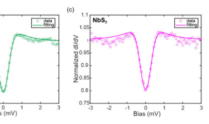

Summary. This work characterizes the atomic-scale surface structure and local superconductivity of the misfit layered compound (SnS)1.17NbS2. Using STM and STS, the researchers found that the superconducting gap is nearly uniform across both the SnS and NbS2 surface terminations. The results establish an atomic-scale picture of the material's electronic state, suggesting structural mismatch does not induce a detectable modulation in the superconducting gap.
Why it may be interesting. While primarily condensed matter experimental physics, the study of superconductivity in engineered heterostructures and the investigation of electronic properties at interfaces are highly relevant to understanding emergent quantum phenomena in solid-state systems.
Main problem. The study investigates the atomic-scale surface structure and local superconducting properties of the misfit layered compound (SnS)1.17NbS2, specifically addressing how surface termination affects electronic states compared to the bulk structure.
Main result. The superconducting gaps measured on both the SnS- and NbS2-terminated surfaces are nearly identical, suggesting robust superconductivity across the structure despite structural differences. Furthermore, the gap shows no visible modulation corresponding to the misfit lattice periodicity.
Method. The research employed a combination of structural characterization (XRD, STEM) and local electronic measurements using low-temperature scanning tunneling microscopy (STM) and spectroscopy (STS).
Model / system. The physical system is the misfit layered compound (SnS)1.17NbS2, which naturally forms a superlattice of alternating SnS and NbS2 sublayers. The investigation focuses on the electronic properties at the surface terminations.
Key observables. Superconducting gap ($\Delta$), surface atomic registry, in-plane resistivity ($ ho(T)$), and spatial variation of the gap size.
Important parameters / regimes. Superconducting gap values ($\approx 0.33 ext{ meV}$), measurement temperature (2 K), and lattice mismatch parameters.
Assumptions / limitations. The surface structure difference is attributed to surface relaxation, and the analysis of gap variation is limited by the current STM capability (no temperature dependence measurement).
Figures summary. Figures show the bulk crystal structure (STEM, XRD), large-area STM images distinguishing SnS and NbS2 terminations, resistivity vs. T curves, and high-resolution STS spectra mapping the superconducting gap size.
Paper structure. The paper proceeds by first confirming the bulk misfit structure using XRD and STEM. It then uses STM to resolve the distinct atomic-scale surface terminations. Finally, STS measurements are performed to characterize the superconducting gap on both terminations and map its spatial variation.
Superlattices of van der Waals-coupled two-dimensional materials offer a platform for engineering electronic band structure and fostering emergent quantum states. Misfit layered compounds provide naturally assembled superlattices, in which crystallographically distinct two-dimensional subsystems coexist within a single bulk crystal. Therein, the presence of both commensurate and incommensurate lattice directions introduces structural modulation, which might alter real-space electronic orders such as superconductivity. Here, we investigate the atomic-scale surface structure and local superconductivity of the misfit layered compound (SnS)1.17NbS2 using structural characterization, electrical transport, and low-temperature scanning tunnelling microscopy (STM). While X-ray diffraction and cross-sectional scanning transmission electron microscopy confirm the bulk misfit structure, STM resolves large SnS- and NbS2-terminated terraces, where the surface atomic registry differs from the bulk misfit structure. Furthermore, tunnelling spectroscopy at 2 K reveals nearly identical superconducting gaps on both terminations, and the spatial variation of the gap shows no visible modulation that corresponds to the misfit lattice. These results establish an atomic-scale picture of the surface structure and superconducting states of this naturally assembled misfit heterostructure.
Authors: Guy Ohad, Nadine C. Bradbury, Joseph E. Subotnik
Type: theory · Category: other · PDF: https://arxiv.org/pdf/2610.18631v1
Analysis basis: full PDF text, analyzed in chunks


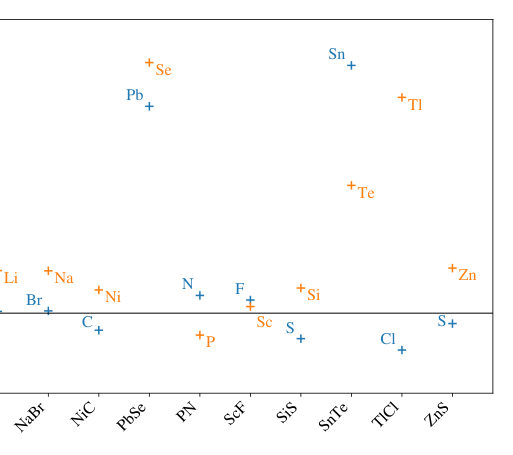
Summary. This paper develops a robust phase space electronic Hamiltonian to correctly model molecular dynamics while incorporating pseudopotentials. By introducing a non-local operator, the authors ensure the conservation of linear and angular momentum, which is crucial for accurate non-adiabatic calculations. Benchmarking against a generalized Nafie's equality confirms the method's success in capturing electronic momentum beyond the standard Born-Oppenheimer approximation.
Why it may be interesting. This work is highly relevant to AMO physics and open quantum systems because it provides a rigorous, momentum-conserving framework for molecular dynamics calculations that explicitly accounts for the non-adiabatic coupling effects inherent in pseudopotentials, moving beyond simple BO treatments.
Main problem. The paper addresses the challenge of developing a phase space electronic Hamiltonian that correctly conserves linear and angular momentum when incorporating pseudopotentials into ab initio calculations.
Main result. The proposed phase space theory successfully captures meaningful electronic momentum beyond the Born-Oppenheimer approximation, demonstrated by excellent agreement with a generalized Nafie-like equality across various diatomic molecules.
Method. The authors construct a phase space Hamiltonian $\hat{H}_{PS}(\mathbf{R}, \mathbf{P})$ by introducing a non-local operator $\hat{\Gamma}_{nl}$ to ensure momentum conservation, and benchmark this against a generalized Nafie's equality.
Model / system. The theory is applied to electronic structure calculations for diatomic molecules using DFT at the GGA level, extending the framework beyond the standard Born-Oppenheimer approximation to include nuclear momentum $\mathbf{P}$.
Key observables. Electronic momentum, total linear and angular momentum ($\Pi_{tot}, \Lambda_{tot}$), and the Nafie ratio (which should approach 1).
Important parameters / regimes. The non-local component of the pseudopotential ($\hat{\eta}_{nl}$), and the ratio of nuclear momenta ($\log_{10}|P_{Li}/P_{F}|$).
Assumptions / limitations. The primary approximation involves using an approximate one-electron operator $\hat{\Gamma}_I$ to handle the non-local pseudopotentials, and the analysis often restricts itself to single-atom translations to maintain a well-defined diagnostic ratio.
Figures summary. Figure 1 shows the Nafie ratio for 17 diatomic molecules using the approximate phase space operator. Figure 3 plots the Nafie ratio for vibrating LiF versus the ratio of nuclear momenta, showing convergence to 1 in limits. Figure 4 compares the ratio when the non-local pseudopotential term is included versus excluded.
Paper structure. The paper first introduces the need for a phase space Hamiltonian to conserve momentum beyond BO. It details the construction of the Hamiltonian using a non-local operator $\hat{\Gamma}_{nl}$. The core of the work involves deriving and testing a generalized Nafie's equality, benchmarking the theory against this diagnostic using multiple diatomic systems.
We demonstrate how to build a robust phase space electronic Hamiltonian $\hat{H}_\text{PS}(\boldsymbol{R},\boldsymbol{P})$ that depends on nuclear position $\boldsymbol{R}$ and nuclear momentum $\boldsymbol{P}$ in the presence of ionic pseudopotentials. In particular, we show that in order to account for the non-local component of a pseudopotential while also conserving linear and angular momentum, one is forced to introduce a non-local one-electron operator $\hat{\boldsymbolΓ}^\text{nl}$ that couples electronic and nuclear momenta together. To test the validity of our ansatz, we derive a generalized form of Nafie's exact equality (which relates electronic momentum and electronic position) so as to include the presence of pseudopotentials. We then benchmark our proposed phase space electronic structure theory against this generalized Nafie-like result for a diverse set of diatomic molecules spanning a wide range of elements. We find excellent agreement across this ab initio test set, highlighting the strength of our method in capturing meaningful electronic momentum beyond the Born-Oppenheimer framework.
Authors: Ipsita Mandal
Type: theory · Category: other · PDF: https://arxiv.org/pdf/2610.18629v1
Analysis basis: full PDF text, analyzed in chunks


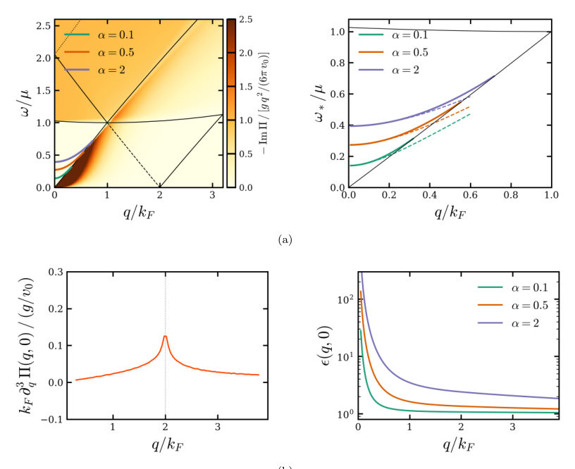

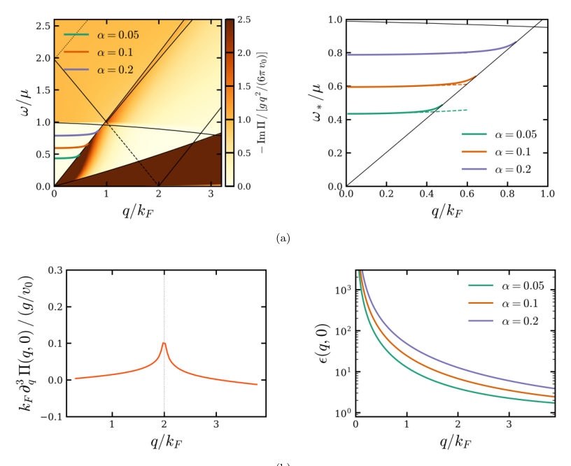
Summary. This paper theoretically investigates plasmon modes in topological semimetals, comparing linear and quadratically corrected models. Using the Random-Phase Approximation, the authors show that the collective charge dynamics are governed by a joint interplay between the material's band structure and its quantum geometry. The work extends the analysis to finite momentum transfers, providing detailed diagnostics like screening and Friedel oscillations.
Why it may be interesting. The detailed analysis of collective excitations in topological semimetals provides insights into how band structure and topological invariants (like Berry curvature) dictate macroscopic electromagnetic responses, which is relevant for understanding charge transport in novel quantum materials.
Main problem. The study investigates collective charge excitations, specifically plasmon modes, in various semimetallic systems, including triple-point, Hopf, and Weyl semimetals.
Main result. The analysis demonstrates that while Drude weights depend on the Fermi surface, interband screening and plasmon dispersion are governed by the underlying quantum geometry of the eigenstates.
Method. The Random-Phase Approximation (RPA) is employed to calculate the density response and dielectric function, extending the analysis beyond the long-wavelength limit to arbitrary momentum transfers.
Model / system. The systems studied are semimetals, modeled using low-energy Hamiltonians that can be linear (Dirac/flat-band) or corrected quadratically in momentum. The comparison is drawn between the linear TSM/HSM and its quadratic-corrected counterpart (QTSM).
Key observables. Density response, Drude weights, screening, plasmon dispersion and damping, particle-hole continua, and Friedel oscillations.
Important parameters / regimes. Momentum transfer ($q$) ranging from long-wavelength to arbitrary values; the quadratic correction parameter ($c$).
Assumptions / limitations. The use of the Random-Phase Approximation (RPA) and the systematic expansion of the polarization function $\Pi$ in momentum and frequency space.
Figures summary. Figure 1 schematically illustrates band dispersions for WSM, TSM/HSM, and QTSM, highlighting how the quadratic correction makes the flat-band dispersive.
Paper structure. The paper systematically calculates the polarisability ($\Pi$) and the RPA dielectric function ($\epsilon_{ ext{RPA}}$) by separating intraband and interband contributions. It then analyzes the plasmon dispersion by expanding $\Pi$ in $q$ to determine the shift ($\delta$) of the plasmon frequency.
We study collective charge excitations in pseudospin-1 triple-point semimetals within the random-phase approximation, considering both the linearised model with a flat-band and its quadratic-corrected counterpart. We analyse their density response, Drude weights, screening, plasmon dispersion and damping, particle-hole continua, and Friedel oscillations from the long-wavelength to the arbitrary-momentum regime. The quadratic correction renders the flat-band dispersive and endows it with a Fermi surface, thereby affecting the overall response. Comparisons with Weyl and Hopf semimetals reveal how bandstructure and quantum geometry jointly govern collective charge dynamics. While the Drude weights are determined by the Fermi surface and band-velocities, interband screening, plasmon dispersion, and Friedel oscillations reflect the quantum geometry of the eigenstates.